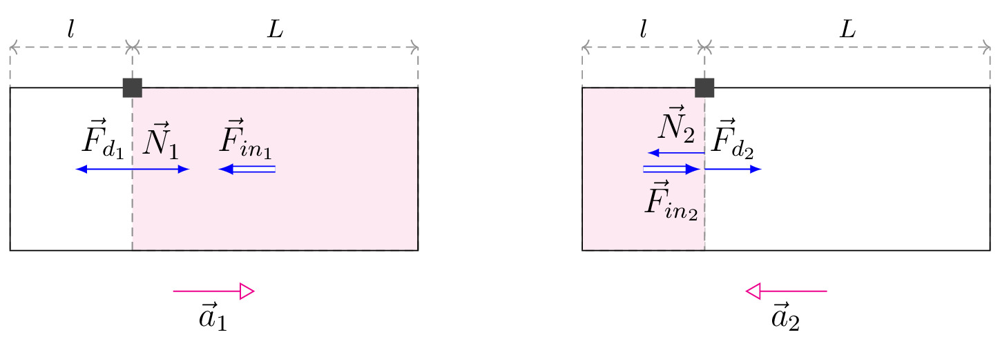

pre.tex
\documentclass[tikz]{standalone}\input{pre.tex}\begin{document}\begin{tikzpicture}[font=\large]
\matrix[column sep=2cm] {
\draw[<->, axis] (1.5,2.5) -- node[above, black] { $L$} ++(3.5,0);
\draw[<->, axis] (0,2.5) -- node[above, black] { $l$} ++(1.5,0);
\draw[axis] (0,0) -- ++(0,2.5) (1.5,0) -- ++(0,2.5) (5,0) -- ++(0,2.5);
\draw[axis, fill=magenta!10] (1.5,0) rectangle (5,2);
\draw[] (0,0) rectangle (5,2);
\coordinate (C) at (3.25,1);
\path (0,0) -- coordinate (mid) (5,0);
\path (1.5,0) -- coordinate (F) ++ (0,2);
\draw[acceleration, ->] (mid) ++ (-0.5,-0.5) -- node[below] {$\vec{a}_1$} ++(1,0);
\draw[force, ->] (F) -- node[above] {$\vec{N}_1$} ++(0.7,0);
\draw[force, ->] (F) -- node[above] {$\vec{F}_{d_1}$} ++(-0.7,0);
\draw[inforce, ->] (C) -- node[above] {$\vec{F}_{in_1}$} ++(-0.7,0);
\node[shape=rectangle, minimum width=2mm, minimum height=2mm, anchor=center ,fill=black!80] at (1.5,2) {};
&
\draw[<->, axis] (1.5,2.5) -- node[above, black] { $L$} ++(3.5,0);
\draw[<->, axis] (0,2.5) -- node[above, black] { $l$} ++(1.5,0);
\draw[axis] (0,0) -- ++(0,2.5) (1.5,0) -- ++(0,2.5) (5,0) -- ++(0,2.5);
\draw[axis, fill=magenta!10] (0,0) rectangle (1.5,2);
\draw (0,0) rectangle (5,2);
\coordinate (C) at (0.75,1);
\path (0,0) -- coordinate (mid) (5,0);
\path (1.5,0) -- coordinate (F) ++ (0,2);
\draw[acceleration, <-] (mid) ++ (-0.5,-0.5) -- node[below] {$\vec{a}_2$} ++(1,0);
\draw[force, ->] (F) ++ (0,0) -- node[above] {$\vec{F}_{d_2}$} ++(0.7,0);
\draw[force, ->] (F) ++ (0,0.2) -- node[above] {$\vec{N}_2$} ++(-0.7,0);
\draw[inforce, ->] (C) -- node[below] {$\vec{F}_{in_2}$} ++(0.7,0);
\node[shape=rectangle, minimum width=2mm, minimum height=2mm, anchor=center ,fill=black!80] at (1.5,2) {};
\\
};
\end{tikzpicture}\end{document}